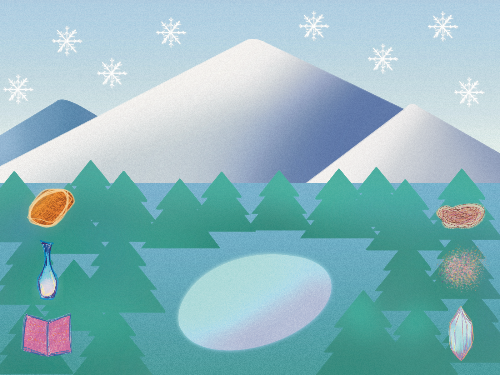
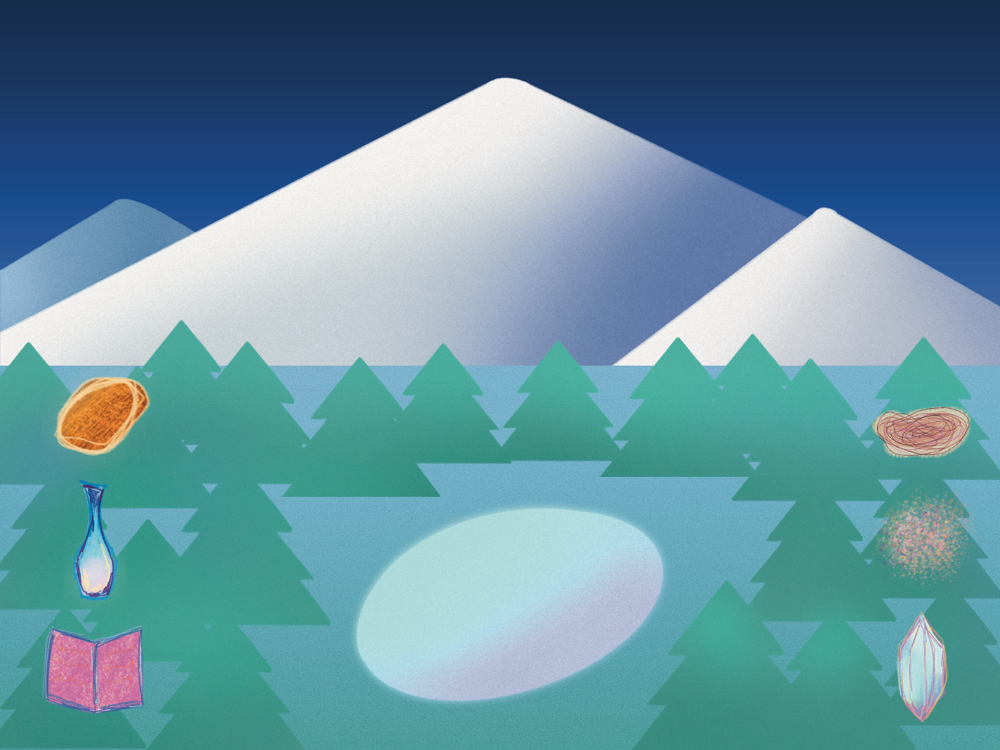
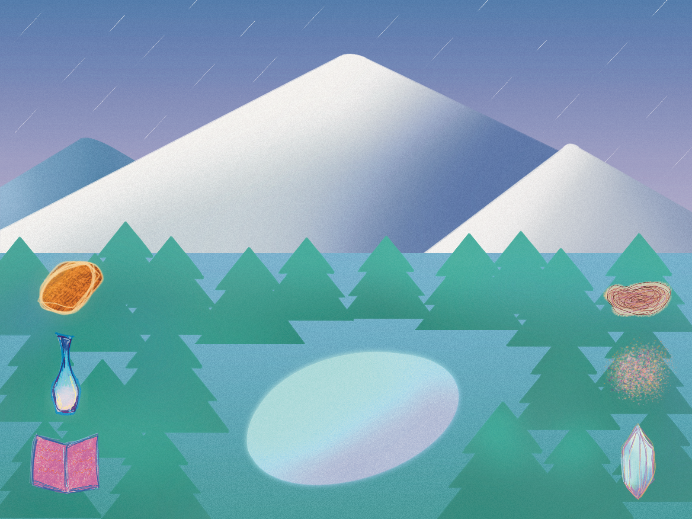

The Snow
Mountain
An interactive ritual where users perform a sequence of gestures to calm a restless snow mountain.

Introduction
I wanted users to feel like they were performing something, not just completing a task. That meant every interaction — every click, every drag — had to carry intention. No tutorials, no instructions, no UI hand-holding; just curiosity pulling them forward.
The ritual is translated into two interaction languages: ordered clicks for summoning (runes lighting up in sequence) and drag gestures for offering ritual objects. Together, they form a rhythm of discovery and deliberation that mirrors how real rituals unfold.
Watch Demo on YouTube ↗


A Ritual, Translated Into Gestures
I broke the ritual into two interaction languages: ordered clicks for summoning (runes lighting up in sequence) and drag gestures for offering (placing ritual objects onto the mountain). Together they form a rhythm — discovery, then deliberation — that mirrors how real rituals unfold.
Hand-Drawn Materiality
Every frame, rune, and creature was illustrated in Procreate, then brought into Java. Keeping the handmade texture was non-negotiable — it's what separates a ritual from a UI.
Condition-Based Poetics
The mountain responds only when gestures are performed in the right spirit — correct order, correct objects. The logic is strict, but the feedback is soft: light, sound, stillness.
Learning By Noticing
No tutorial. Users figure out what to do by watching what the mountain reacts to. The interface teaches itself through the smallest visual cues.